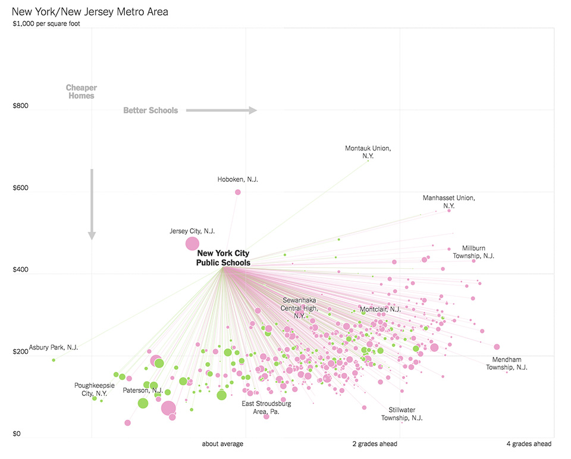
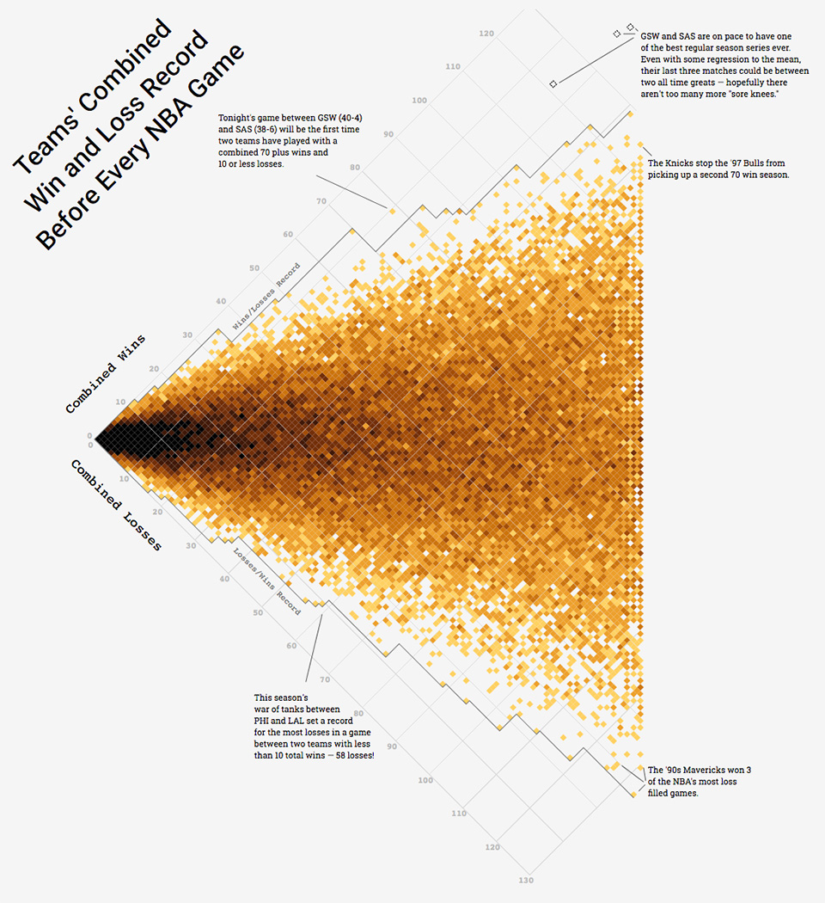

The making of the weighted pivot scatter plot
May 2017
I recently published a story that tried to answer the question “what city is the microbrew capital of the US?” One of the graphics in the story allows the user to adjust some parameters to change the rankings, and see how the data can be manipulated to yield different results. It looks like this:
The idea for this chart started when Matt sent me the latest Upshot article that explored school systems and home prices. I was still in the process of figuring out how I wanted to display the rankings of all cities, and he suggested something similar.

The mental model of higher on the chart equaling worse takes a bit of thought, but nonetheless, the chart was effective. It was helpful to have a single focal point to anchor the reader, and the lines enabled you to spatially compare the nodes.
For my chart, I started with two dimensions; a score for quality, and one for quantity. This was easy to whip up since it was a traditional scatter plot. Unlike the NYT’s example, I had no starting point for comparison. The encoding for “better” relied upon size and color, which was dynamic based on user input. Try it out below.
This worked. But to me, it didn’t do a good job at communicating what was going on behind the scenes of the weighting. I decided try a spatial encoding to further emphasize the weighting factors. The most obvious way was to make axes proportional to their weight. So if our chart was 100x100, and the “quality” was weighted at 60%, it would be 60x40 (or scaled up to 100x67). The more a circle was towards the top-right corner, the higher its rank.
[tk chart 2 - weight scatterplot]
This worked, too. But there were two problems: the chart kept changing size, and the “top-right is better” idea might be less intuitive to the layperson. I started looking at other graphics for inspiration and remembered Adam Pearce’s rotated scatterplot, used to better align the chart trend with your level gaze.

Time to implement a combination of the visually proportional axes with the rotated chart to achieve maximum spatial encoding and understanding.
For this to work, I had to dig into some mild trigonometry. I first needed to find the length of the hypotenuse (the line from bottom-left to top-right) in order to scale the axes as they change. This would keep the chart dimensions consistent. I then needed to calculate the angle of that this triangle to rotate the chart, thus keeping the hypotenuse vertically oriented.
[tk code]
I applied these transformations to the the chart and voila, the weighted pivot scatter plot was alive.
[tk chart full]
Was the extra level of encoding necessary? Maybe not, but it came with one unexpected and undeniable side effect; it was fun. Watching the chart pivot and transition in response to your input is playful. I believe that it made the chart more engaging. Despite being a fairly short story, it got upwards of nine minutes time on page per user. It also invites the user to more deeply explore the data, which has a less quantifiable effect, much like a gorgeous presentation.